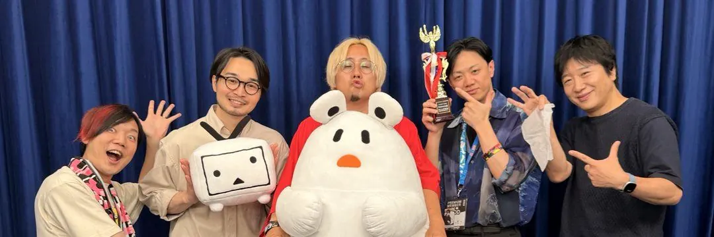
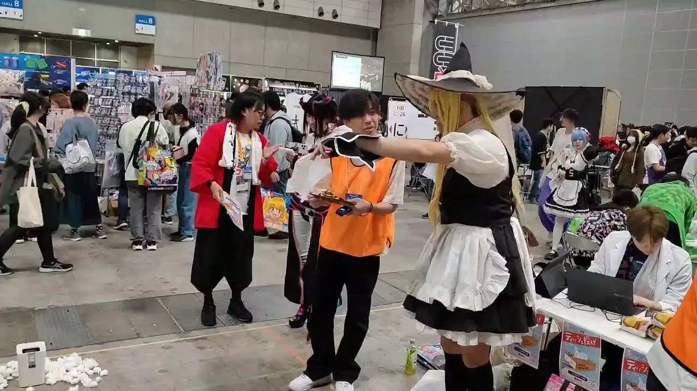
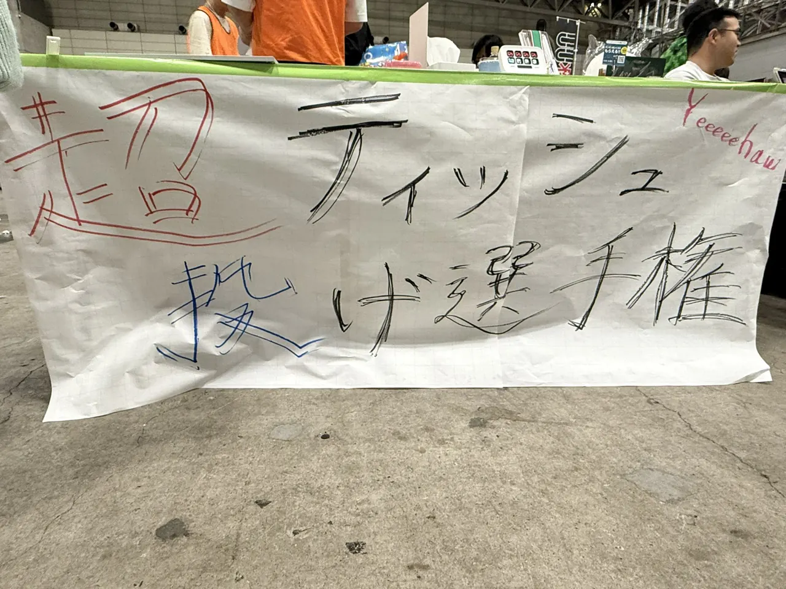
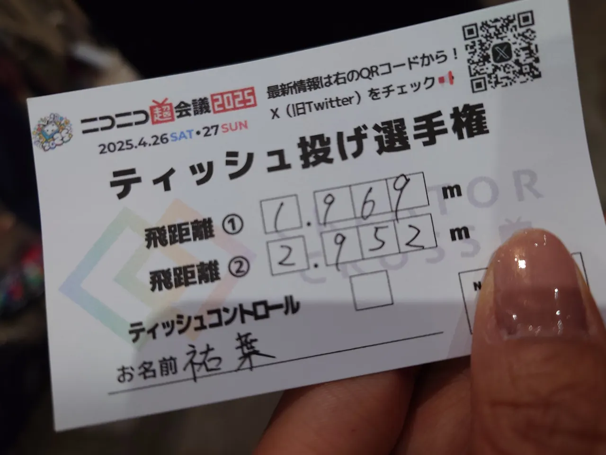
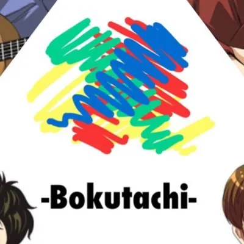
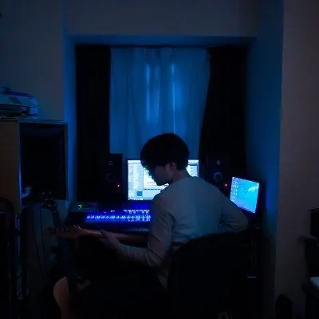
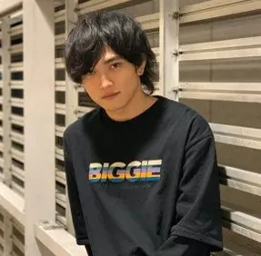
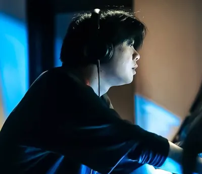
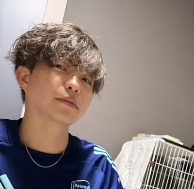

5m
10m
15m
Best Record
15.42m
Competition
ティッシュ投げ選手権とは
ティッシュ投げ選手権は、クリエイタークロスで「ぼくたち」というチームが運営する参加型企画。 幕張メッセでティッシュを投げ、その飛距離を競う。
ゆるい。でも奥深い。
誰でも参加できる単純なルールながら、投げ方、力加減、紙の扱い、会場環境によって記録が変わる。 そのゆるさと奥深さを、イベント会場で楽しめる形にした企画。
2026 大賞




Team
運営紹介
ティッシュ投げ選手権は、「ぼくたち」によって運営されている。 本気で遊ぶことを目的とする男たち。クリエイタークロスでは「みんなを主役に」というコンセプトで、自分たちは競技スタッフに徹する。

すせお
ぼくたちのリーダー。ニコニコ超会議の人として多くのニコニコ民に知られている。

ぺー
ぼくたちのクオリティ担当。歌、ギター、ダンス、パティシエと多才。すべてにこだわりを持つ。

そーちゃん
ぼくたちのイケメンマッチョ担当。誰よりもふざけており、隙あらばちょけるが、根は真面目。

つまさっきー
ぼくたちのエンジニア担当。準備から開催までテクノロジーで支援する裏方。

こみこみ
ぼくたちのオールラウンダー。空いた穴を埋め、現場を前に進める存在。
ゆうすけ
ぼくたちのカメラマン。いつもニコニコしていて、動画撮影と編集に情熱を持つ。
System
システムの生い立ち
ティッシュ投げ選手権の運営システムは、開催ごとに少しずつ進化してきた。 最初は記録入力とランキング表示を中心に、現在はWebアプリによる現場運営へ広がっている。
記録入力の開始
スプレッドシートへ記録を入力。競技運営のデータ化を開始。
ランキング表示
スプレッドシートの記録をLooker Studioで可視化。会場表示の体験を改善。
Webアプリ化
スマホブラウザで記録入力、PCブラウザでランキング表示。現場運営の速度を上げる。
Vision
DXが目指す世界
プロジェクトが目指すのは、単に記録を取るだけの仕組みではない。 競技、運営、観戦、分析をつなぎ、ティッシュ投げ選手権そのものを拡張するシステム。
自動記録
距離計測器の通信を受け取り、自動でデータベースに記録。
多角的分析
風、湿度、フォームなど、多角的なデータ分析で競技レベルを底上げ。
記録管理
競技者向け記録管理アプリで、競技者の成長をサポート。
現場運営
現場運営向けUIで、記録入力、ランキング更新、表示管理を効率化。
Technology
想定技術スタック
計測器
マイコン
HTTP
REST API
RDB
分析UI
現場UI
軽量LP
Future
夢物語
ティッシュ投げ選手権は、まだ成長途中。 AIによるフォーム分析、VR/MRによるビジュアライズ、未知の技術との組み合わせ。 本気の遊びだからこそ、先端技術を積極的に取り入れ、競技者とともに可能性を広げていく。
Closing
技術は本気度を映し出す。
ティッシュ投げ選手権は、一見くだらないことを本気でやることに面白さがある。 本気で計測し、記録し、分析し、仕組みにすることに価値がある。
本プロジェクトではこの信念の下、実装・検証をハイサイクルで進めていく。
GitHubリポジトリへ